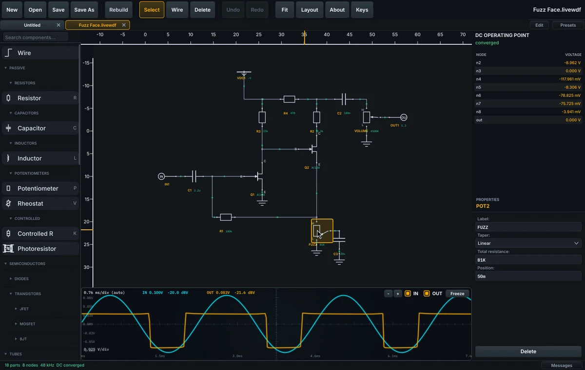

Overdrive
Boss SD-1
Listen for the midrange and the softened pick attack.
LiveWDF documentation
Draw a circuit, load a factory preset, and hear it through the same simulation engine.

Explore the amps, pedals, and studio circuits. Click a column heading to change the sort order.
Each clip plays the source first, then the modeled circuit after a short pause.
Overdrive
Listen for the midrange and the softened pick attack.
Chorus
Sustained chords reveal the movement of the modulated delay.
Analog delay
Listen to the filtered repeats and the echo tail.
Studio compressor
A synthetic drum phrase lets you hear how the compressor handles the jump in level.
The guitar DI is from Guitar-TECHS by Hegel Emmanuel Pedroza Villalobos, Termeh Taheri, Wallace Abreu, Ryan Corey, and Iran R. Roman (CC BY 4.0). The excerpts were edited, filtered, and faded. LiveWDF rendered the processed halves. The SSL demo uses synthetic drums. Guitar-TECHS · CC BY 4.0 · Pedal recording settings · SSL recording settings
The Circuit Editor, Standalone player, and VST3 share a C++ Wave Digital Filter engine.
A .livewdf file stores the drawn components, wires, controls, and probes. LiveWDF derives connectivity when it opens the file.
The engine builds the linear transfer at the effective sample rate, finds the DC operating point, and initializes capacitor and inductor histories.
Engine setupThe engine assembles the linear drive, solves the nonlinear devices, and updates the node voltages and state. The player handles calibration, oversampling, and wet/dry mix.
Sample processingRelease build at 2f71c20 for the original 91 presets and on the factory amp collection branch for the 20 additions. Both runs used Linux and one logical CPU on an Intel Core Ultra 7 155H. Preview ran at the factory control positions in mono, 1×, at 48 kHz and 128 samples per block.
The circuit renderer processed three takes of the same Guitar-TECHS Sire T7 DI excerpt, starting at 6 seconds and normalized to −6 dBFS before preset input calibration. Each take discarded 1,024 silent warm-up samples and the first 32 audio blocks, then measured 512 blocks. Statistics pool 1,536 blocks per preset.
Median is the middle block CPU time. p99 is the CPU time at or below which 99% of measured blocks finished. The block budget at these settings is 2.67 ms. Amber p99 values exceed that budget. These figures measure renderer CPU time.